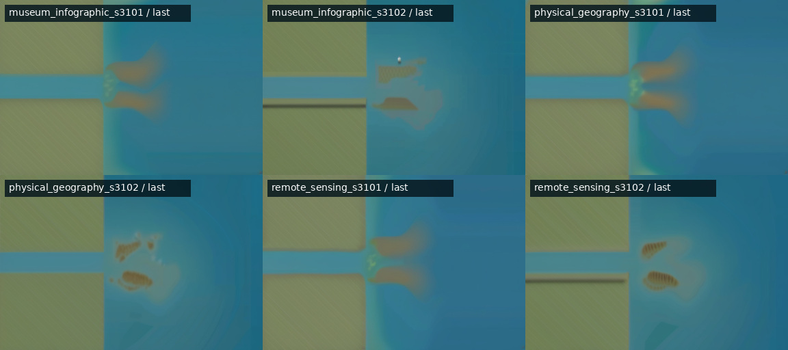
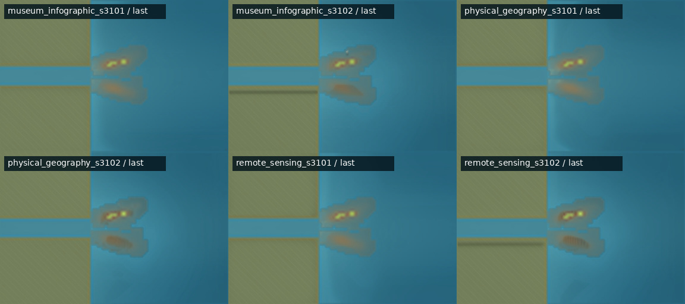

状态：selected_pair_ready
Track A 先计算三角洲机制；Track B 从已验证状态取两个关键帧，让 SDXL 提供纹理， 再用机制区域图把海岸线、河道和沉积范围锁回原位置。模型不决定地形。

states.jsonl + timeline.json → 选 accumulate 末尾和 threshold_change 末尾 → 机制底图 + Canny 边缘图 + 五类语义 mask → SDXL img2img + Canny ControlNet 原始提案 → mask 约束纹理、降低边界权重 → 比较六个尾帧候选 → 用选定 prompt 和 seed 生成首尾帧 → 几何门禁、稳定性检查、final/
| 名称 | 阶段 | 展示帧 | 机制状态 |
|---|---|---|---|
| 首帧 | accumulate |
71 | 100 |
| 尾帧 | threshold_change |
85 | 107 |
control_edges 是底图经 Canny 100/200 得到的 ControlNet 输入，只用于
减少边缘漂移，不是成品。semantic_masks 直接从机制状态计算，不是 AI 标注；
五张图互斥并完整覆盖所有像素。
| mask | 保护内容 |
|---|---|
| original_land | 原有陆地和海岸 |
| river | 海岸线以内的河道水格 |
| ocean | 其余开阔水域 |
| underwater_deposit | 尚未出水的水下沉积 |
| new_land | 机制判定已经出水的新陆地 |
| 模型 ID | 本地路径 | 状态 |
|---|---|---|
stabilityai/stable-diffusion-xl-base-1.0 | /workspace/ai-concept-animator/.cache/models/sdxl-base-1.0 | 可用 |
diffusers/controlnet-canny-sdxl-1.0 | /workspace/ai-concept-animator/.cache/models/controlnet-canny-sdxl-1.0 | 可用 |
| 软件 | 版本 |
|---|---|
torch | 2.9.1+gitff65f5b |
diffusers | 0.35.2 |
transformers | 4.57.6 |
accelerate | 1.13.0 |
safetensors | 0.7.0 |
opencv-python-headless | 4.13.0.92 |
| GPU | AMD Radeon Graphics |
768×512、FP16、36 steps、strength 0.50、guidance 6.5、 ControlNet scale 1.35；每种尾帧风格使用 seed 3101 和 3102。
模型提案先提取中高频纹理和受限明暗，再逐 mask 混回机制底图。 mask 向内腐蚀 4 像素后，内部权重为 0.62，边界权重降为 0.14； 模型的整体颜色布局不会进入成品。
residual = proposal - gaussian_blur(proposal, radius=7) shading = clip(local_luminance / region_median, 0.82, 1.18) textured = base × shading + 0.72 × residual final = base × (1 - weight) + textured × weight
本次人工选择 physical_geography_s3102。数值指标只辅助发现
异常模糊图片，不自动决定风格。
| 候选 | 平均梯度 | 对比度 |
|---|---|---|
museum_infographic_s3101 | 0.001582 | 0.048083 |
museum_infographic_s3102 | 0.001627 | 0.050883 |
physical_geography_s3101 | 0.001596 | 0.050538 |
physical_geography_s3102 | 0.001632 | 0.050420 |
remote_sensing_s3101 | 0.001564 | 0.048313 |
remote_sensing_s3102 | 0.001666 | 0.050902 |
下面两张图仅用于比较模型原始提案和受机制约束后的候选，不是额外交付物。


几何门禁：通过
python -m venv .venv .venv/bin/python -m pip install -r modules/video_model/stage1/requirements.txt .venv/bin/python -m modules.video_model.stage1.causal_delta.simulate .venv/bin/python -m modules.video_model.stage1.causal_delta.validate .venv/bin/python -m modules.video_model.stage1.causal_delta.export MODEL_PYTHON=/opt/venv/bin/python $MODEL_PYTHON -m modules.video_model.stage1.keyframe_render.prepare $MODEL_PYTHON -m modules.video_model.stage1.keyframe_render.enhance --status-only $MODEL_PYTHON -m modules.video_model.stage1.keyframe_render.enhance --generate-candidates --force $MODEL_PYTHON -m modules.video_model.stage1.keyframe_render.evaluate $MODEL_PYTHON -m modules.video_model.stage1.keyframe_render.enhance \ --generate-pair --selected-style physical_geography --seed 3102 --force $MODEL_PYTHON -m modules.video_model.stage1.keyframe_render.evaluate $MODEL_PYTHON -m pytest -q modules/video_model/stage1
需要先安装与显卡匹配的 PyTorch，并准备
stabilityai/stable-diffusion-xl-base-1.0 和
diffusers/controlnet-canny-sdxl-1.0 的 FP16 本地目录。
环境变量、权重 SHA-256、逐文件用途、删除建议和可复现性边界见
完整 Markdown 报告。
{kind=link}
{kind=link}